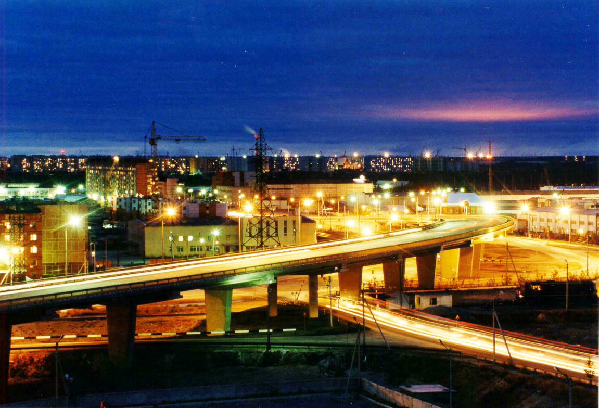
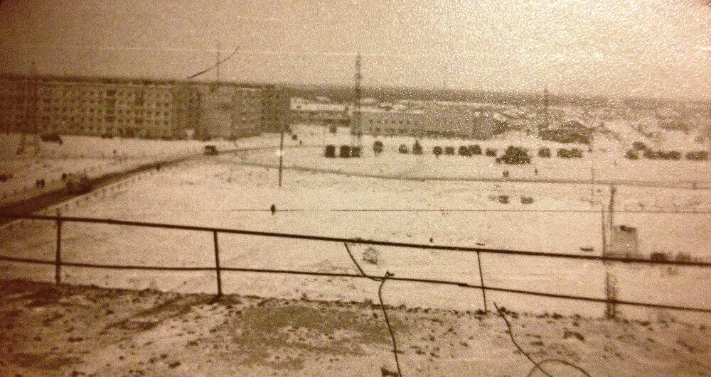
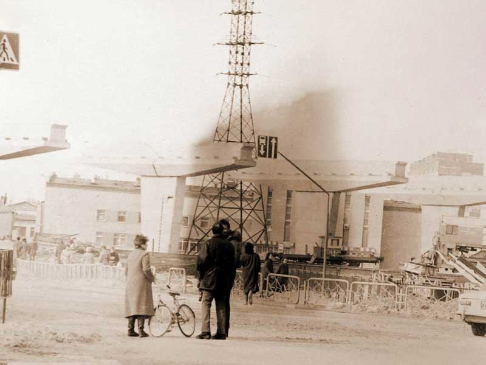
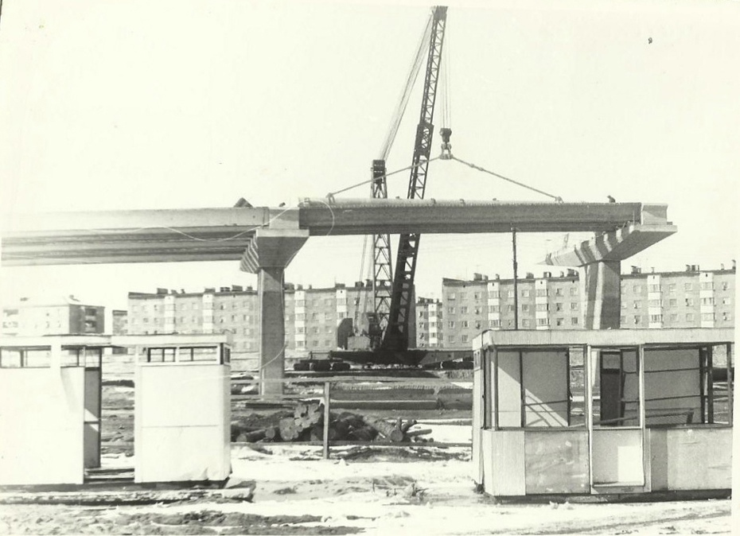
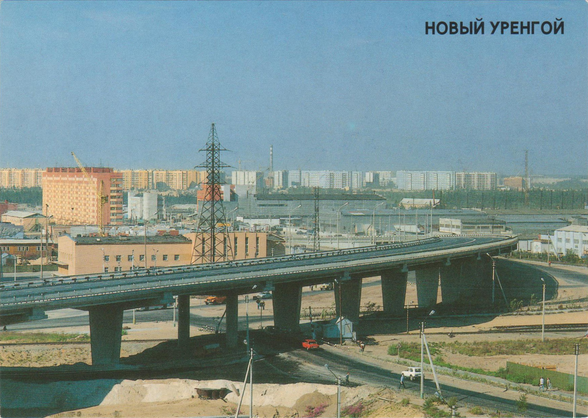

пересечение улиц Железнодорожная и Интернациональная
Одной из визитных карточек Нового Уренгоя по праву можно считать виадук. Главная автомобильная артерия газовой столицы соединяет ул. Магистральную и проспект Губкина.

Слово виаду́к происходит от латинского «via» – дорога, путь, и «duco» – веду. Нужно сказать, что возведение новоуренгойского путепровóда было таким же архитектурным подвигом, как строительство Бруклинского моста по ту сторону земного шара. Для северных широт это сооружение было грандиозным по замыслу и масштабам. Аналогов ему на Ямале, до появления в 2021 году в Новом Уренгое развязки Солнечная, не было. Поэтому, виадук является не только важнейшим элементом дорожной системы, но и, несомненно, архитектурной достопримечательностью города.

В годы интенсивного строительства Нового Уренгоя участок железной дороги от аэропорта до восточной промзоны был сильно загружен. Товарные составы надолго закрывали автомобильный переезд через пути. Старожилы даже вспоминают случай, когда из-за закрытого шлагбаума машина скорой медицинской помощи не успела на вызов к пациенту. Проблему с переездом нужно было решать. Тогда и возникла идея соорудить над железной дорогой в центре Нового Уренгоя мост. Мало кто знает, сколько копий было сломано между сторонниками и противниками этой идеи, когда решался вопрос почти шекспировского масштаба: быть или не быть виадуку.

Первый секретарь городского комитета партии Владимир Столяров относился к числу противников стройки. В восьмидесятые он вместе с коллегами даже подготовил письмо в «Миннефтегазстрой», в котором предложил перенести железнодорожную ветку, ради которой затевалось строительство моста подальше за город. Дешевле бы обошлось. Но убедить министерство не получилось.
Как говорится, всё к лучшему. Сегодня невозможно представить Новый Уренгой без виадука, а тогда, в далёком 1985-м, ленинградские специалисты только приступили к созданию проекта будущего моста. Из-за того, что в южной части города уже была плотная застройка, строители решили возводить путепровод в форме полумесяца.

Мост запланировали на две полосы в каждом направлении, с шириной проезжей части в 16,5 метров. С каждой стороны к ней примыкала 1,5-метровая пешеходная дорожка. Общая длина виадука – 1 километр.
В 1985 году эскизный вариант виадука в форме полумесяца согласовали.
Производственное объединение «Уренгойгазодобыча» получило во временное пользование земельный участок площадью 15 гектаров для возведения моста-гиганта. У основания виадука на время строительства организовали бетонный мини-завод.
Городское пассажирское автотранспортное предприятие разработало схему движения автобусных маршрутов № 1 и № 4 на период стройки. Железнодорожная линия работала без остановок.
Сравнить движение транспорта в городе в середине восьмидесятых и сегодня попросту невозможно: за три десятилетия количество машин выросло в разы и востребованность виадука тоже.
Функционировать в полную силу путепровод начал в 2000 году. Тогда же мост по праву стал не только визитной карточкой города, но и отличной смотровой площадкой, с которой хорошо видно Северную и Южную части газовой столицы.

{kind=link}
{kind=link}
{kind=link}
{kind=link}
{kind=link}
{kind=link}
{kind=link}